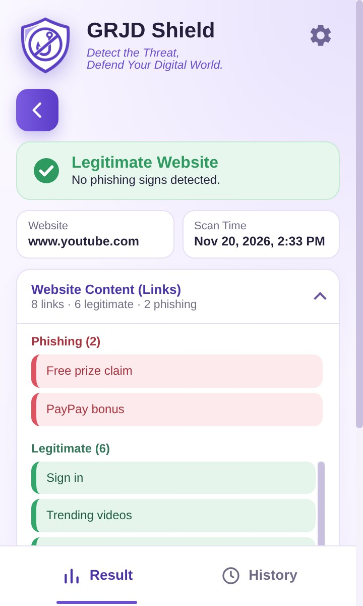
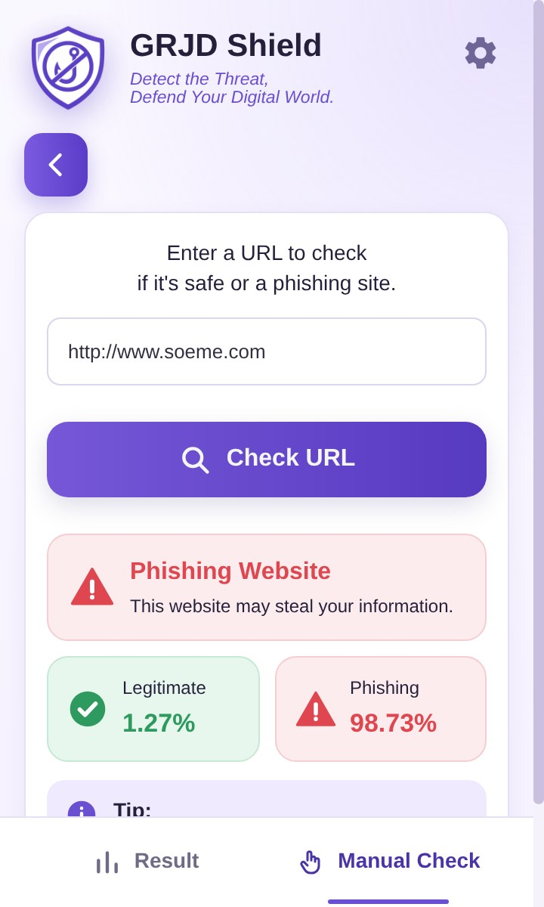
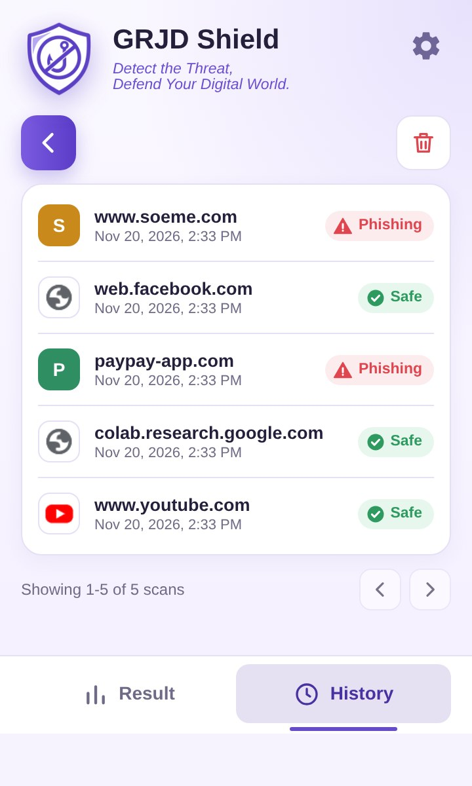
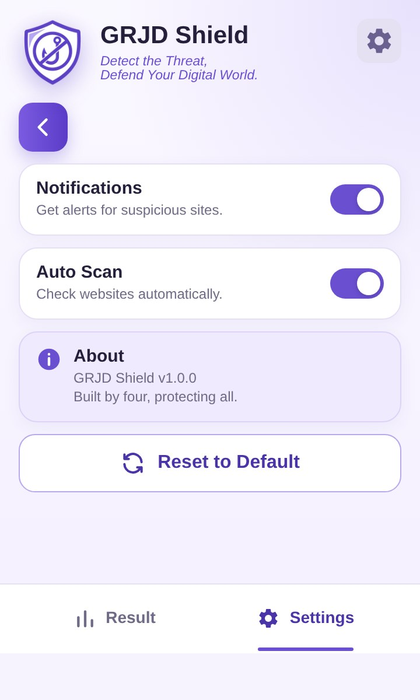
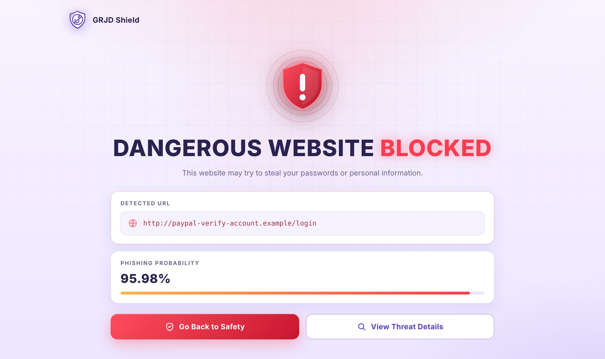

Real-time blocking
Every website you open is checked before it loads. Phishing websites are stopped and a warning page appears.
GRJD Shield is a free Chrome extension that checks every website you open and warns you in real time, before a phishing page even loads.
GRJD Shield is a browser extension for Google Chrome, Microsoft Edge, Brave, and other Chromium browsers. It uses a Random Forest machine-learning model to look at the address (URL) of a website and decide whether it is legitimate or phishing.
The model runs directly inside your browser, so it can check websites instantly, even links that have never been reported before.
GRJD comes from the initials of the four developers, and each letter stands for what the extension does.
“Built by four, protecting all.”
Every website you open is checked before it loads. Phishing websites are stopped and a warning page appears.
A machine-learning model with 400 decision trees analyzes 30 features of the URL and gives a phishing probability.
Scan the whole page you are on: every link inside it and the page content, like forms and hidden frames.
Not sure about a link? Paste it into Manual Check and see the result before you open it.
See the websites you checked, with the date, time, and whether each one was safe or phishing.
Detection happens on your computer. Your browsing history is never sent to us or to any server.
Short links like bit.ly hide the real address. GRJD Shield finds where the link really goes and checks that website.
See the website address and its phishing probability. You can go back to safety or continue once at your own risk.
Add it from the Chrome Web Store. It starts protecting you right away, with no setup needed.
Type a URL, click a link, or open a new tab.
HTTPS, URL length, digits, dots, subdomains, randomness, and more.
400 decision trees vote on whether the website is phishing. For a short link, the real destination is checked.
Phishing websites are blocked with a warning. Legitimate websites open normally.
Click any screenshot to view it larger.





Option 1: Chrome Web Store (recommended)
Also works on Microsoft Edge, Brave, Opera, and Vivaldi. On Edge, click Allow extensions from other stores first. On Opera, install Opera's Install Chrome Extensions add-on first.
Option 2: Manual install (ZIP file)
chrome://extensions (Chrome), edge://extensions (Edge), or brave://extensions (Brave).PhishingDetection folder.GRJD Shield starts working right away. The detection model takes about 20 seconds to load the first time.
Free for Google Chrome, Microsoft Edge, Brave, and other Chromium browsers. Detect the Threat, Defend Your Digital World.